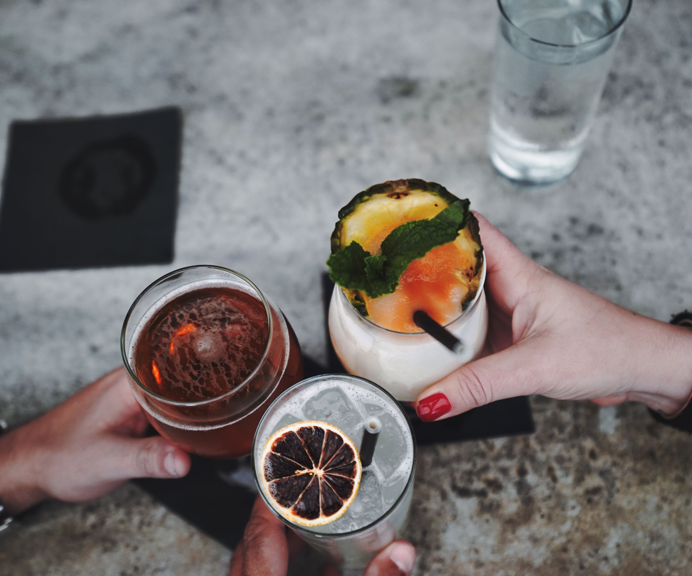
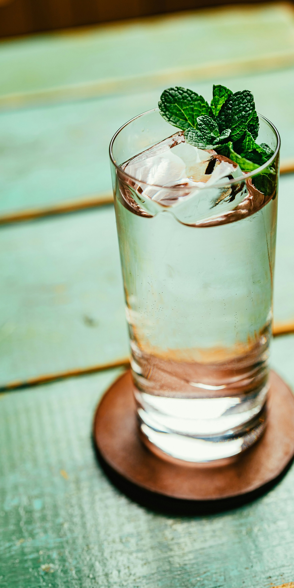

None at all. Every Craft Collective experience is designed so that anyone can participate from the first round. The format gives everyone a role that suits them, whether that's building cocktails as a Maker or scoring them as a Judge.
Makers build the cocktails. Judges score them using a structured rubric across taste, presentation, and creativity. Both tracks are active throughout the event. Nobody sits and watches.
Scores accumulate across rounds, with the final round weighted more heavily. Standings update on a live leaderboard after each round, so the outcome stays open until the end.
An awards ceremony closes the event. The winning pod receives The Collective Cup. There is also a Palate Award, given to the Judge whose scoring most closely matched the group consensus.
The mocktail option is built in. Makers ask their judge at the start of every round. No separate track, no awkwardness.
We come to you. Office spaces, rooftops, private venues, and event spaces all work. If you need help finding a venue, we offer venue sourcing as an add-on.
Each pod needs a bar station with enough room for three to five people to work comfortably. A standard conference room or open office floor typically works well. We'll confirm logistics when you book.
We recommend booking at least two weeks out. Bookings inside seven days are subject to a rush fee.
Your team purchases base spirits from a curated shopping list we send ten days before the event. We bring everything else: specialty ingredients, tools, glassware, scoring materials, and the leaderboard setup.
We arrive a minimum of sixty minutes before your guests to set up every station.
Packages run from $1,500 for The Session up to $4,500 and up for The Craft House, depending on group size and format. Every package includes the facilitator, equipment, mixers, syrups, bitters, garnishes, ice, and scoring materials. Spirits are purchased separately by your team from a curated shopping list. We'll recommend the right package and give you an exact quote once we know your group size and date.
No hidden admin fee, ever. What we quote is what you pay. The only fee that can apply is a 15% rush surcharge for bookings made inside seven days of the event. Beyond that, a range of optional add-ons are available if you want to enhance the experience.
A 50% deposit confirms your date, with the remaining balance due 48 hours before the event.
You can reschedule for free up to 14 days before your event. Inside 7 days, the deposit becomes non-refundable.
Yes. We work with event planners and agencies as referral partners, offering a 15% referral fee on every completed booking. If you place clients regularly, we're glad to talk about an ongoing arrangement.
A range of add-ons are available, including engraved jiggers and branded bar tools, a premium garnish package, a custom signature cocktail, a welcome cocktail on arrival, professional photography, a branded take-home kit, and venue sourcing if you need help finding a space. We'll walk through the full list once we know what you're looking for.